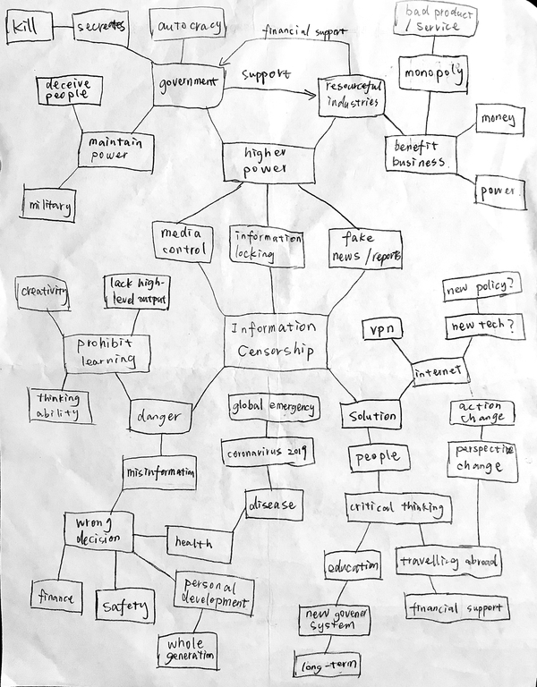

Stella Zhang
Topic Brainstorm
Mindmap Sketch
Summary
The topic that I brainstormed is information censorship. As a victim of information censorship, I've had a lot of thoughts on this topic. But this topic is very broad and I was not sure what to pursuit. Sketching out the mindmap was a difficult process but it effectively helped me organize all the ideas I had in my mind. Now I have a better understanding of my knowledge of the topic. I think I will go into the direction of the solution to online information censorship. I am still not sure how to solve this giant issue existing for centuries, but I wan to dive into this area and try my best to help ease the situation, such as creating an interactive website to raise awareness of the problem and further call to action.